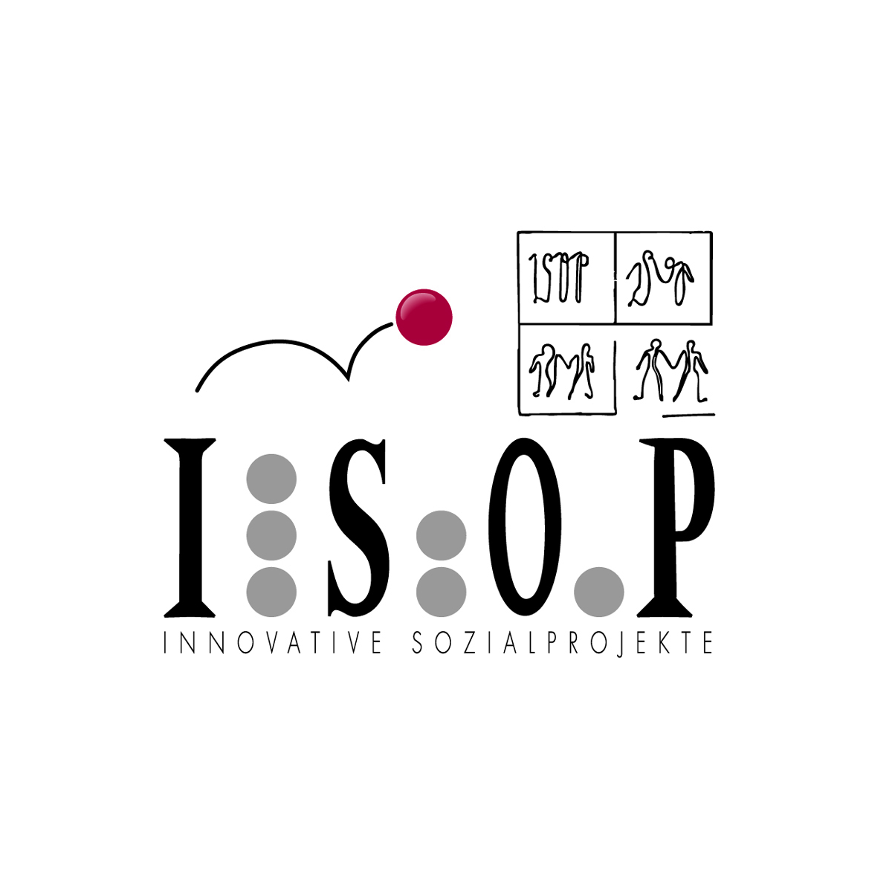

Schulsozialarbeit an der MS St. Andrä

ISOP Schulsozialarbeiterin Mag.a(FH) Bibiane Sperger
Sprechstunden
Montag, Dienstag, Mittwoch und Donnerstag 08:45 - 13:45 Uhr
Erreichbarkeit
Schulsozialarbeitsbüro MS St. Andrä (Raum 209)
Telefon: ☎ 0699 14600021
E-Mail: üìß bibiane.sperger@isop.at
Facebook: Bibiane IsopSchulsozialarbeit
Weitere Infos
ISOP Schulsozialarbeit
ISOP Schulsozialarbeit Downloads
ISOP Schulsozialarbeit auf Facebook

Zentrale Aufgabe der Schulsozialarbeit ist ...
... für alle Anliegen der Schülerinnen und Schüler ein offenes Ohr zu haben.
... Kinder und Jugendliche in ihrem Prozess des Erwachsenwerdens zu begleiten und zu unterstützen.
... Kinder und Jugendliche in ihren Kompetenzen zur Lösung von persönlichen und/oder sozialen Herausforderungen zu stärken.
Zu meinen Aufgaben als Schulsozialarbeiterin zählen Einzelberatungen und
Gruppenberatungen. Schülerinnen und Schüler können sich mit ihren Anliegen, Wünschen und Sorgen
an mich wenden. Neben Beratungen biete ich auch Workshops in den Klassen (z.B. im Sozialen Lernen)
und Freizeitangebote nach der Schule an.
Für Eltern/Erziehungsberechtigte bietet Schulsozialarbeit:
- eine Ansprechperson, wenn Sie sich Sorgen um Ihr Kind machen und/oder Unterstützung brauchen
- Informationen zu Themen wie Pubertät, Gesundheit, Neue Medien etc. sowie diesbezügliche Angebote
- Vermittlungen zu Organisationen, Behörden und anderen Institutionen (z.B. Freizeiteinrichtungen)
Sämtliche Angebote der Schulsozialarbeit sind freiwillig, kostenlos und alle
Gespräche werden vertraulich behandelt. Bei Fragen oder Interesse an einem Gespräch
stehe ich gerne zur Verfügung!